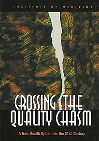

Crossing the Quality Chasm
Crossing the Quality Chasm: A New Health System for the 21st Century is a report on health care quality in the United
States published by the Institute of Medicine (IOM) on March 1, 2001. A follow-up to the frequently cited 1999 IOM
patient safety report To Err Is Human: Building a Safer Health System, Crossing the Quality Chasm advocates for a
fundamental redesign of the U.S. health care system.
Background
In the late 1990s, the IOM established a committee and formal program to study health care quality that lead to the
development of To Err Is Human and Crossing the Quality Chasm: the Committee on Quality of Health Care in America and
the Program on Quality of Health Care in America. They were inspired by an article published by the IOM-sponsored
National Roundtable on Health Care Quality in the Journal of the American Medical Association about the harm to
patients caused by medical errors. Simultaneously, the National Cancer Policy Board and the President's Advisory
Commission on Consumer Protection and Quality in the Health Care Industry published similar reports.
After the positive response to To Err Is Human, which focused purely on patient safety, IOM decided to publish a second,
more comprehensive report focused on the other problems and limitations of the existing U.S. health care system.
Crossing the Quality Chasm would focus more broadly on overuse (applying medical resources and treatments with
insufficient evidence that they lead to greater outcomes), underuse (failing to apply resources or treatments with
known benefits), and misuse (failing to execute care safely and correctly) of health care resources and treatments.
Overview
Crossing the Quality Chasm identifies and recommends improvements in six dimensions of health care in the U.S.:
patient safety, care effectiveness, patient-centeredness, timeliness, care efficiency, and equity. Safety looks at
reducing the likelihood that patients are harmed by medical errors. Effectiveness describes avoiding over and
underuse of resources and services. Patient-centeredness relates both to customer service and to considering and
accommodating individual patient needs when making care decisions. Timeliness emphasizes reducing wait times.
Efficiency focuses on reducing waste and, as a result, total cost of care. Equity looks at closing racial and income
gaps in health care.
Given limitations of the existing U.S. health care system, it proposes a new framework for health care with four levels to
address the six dimensions: A: Patient experiences, B: Care-giving microsystems, C: Organizations that house and
support care-giving microsystems, and D: Legal, financial, and educational environment (e.g., laws, payment,
accreditation, professional training). It also discusses obstacles to change across these dimensions and levels.
Level A: Patient experiences
The first recommendation in Crossing the Quality Chasm relates to setting patient-centric goals for improving the U.S.
health care system. It proposes making clear, comprehensive, and bold goals for quality improvement and that those goals
should focus on improving patient experiences, the cost to each patient, and equity across disparate racial and income
populations. This is in contrast to developing hospital- or physician-centric goals that emphasize the needs of
health care organizations and providers.
Level B: Care-giving microsystems
Crossing the Quality Chasm defines a microcosm as small groups of people, information system(s), client population, and processes (e.g. a local hospital's
night shift Emergency Department staff or a cardiac surgery team). It also includes the staff and systems which
provide IT solutions related to health care.
Level C: Organizations that house and support care-giving microsystems
Crossing the Quality Chasm recommends six organizational changes to not only fix problems in the existing
U.S. health care system but to allow health care organizations to thrive long-term.
1. Better systems for identifying best practices and ensuring that these best practices become organizational
standards
2. Better use of information technology to a) access information and b) support clinical decision making.
3. Greater investment in workforce training and skill development.
4. Better team coordination.
5. Improved care coordination across and within services and organizations, particularly for patients with chronic
conditions.
6. Better performance measurement.
It also recommends that United States Department of Health and Human Services (HHS) invest resources in making
clinical best practices easy to access nationwide and support a health care information system infrastructure that
includes "the elimination of most handwritten clinical data by the end of the decade.”

Author : Committee on Quality of Health Care
in America and Institute of Medicine
Country : United States
Language : English
Genre : Non-fiction
Publisher : National Academies Press
Publication date : July 19, 2001
Media type : Print (Hardback)